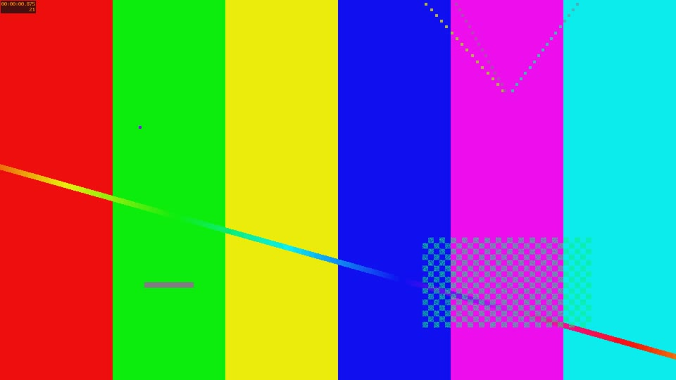
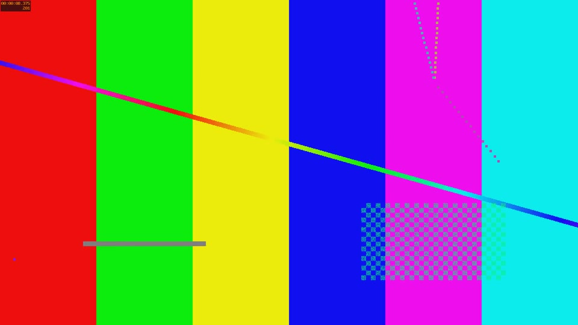
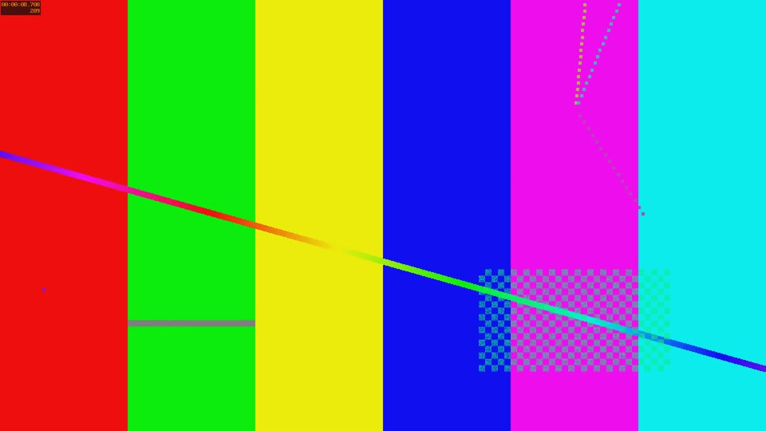
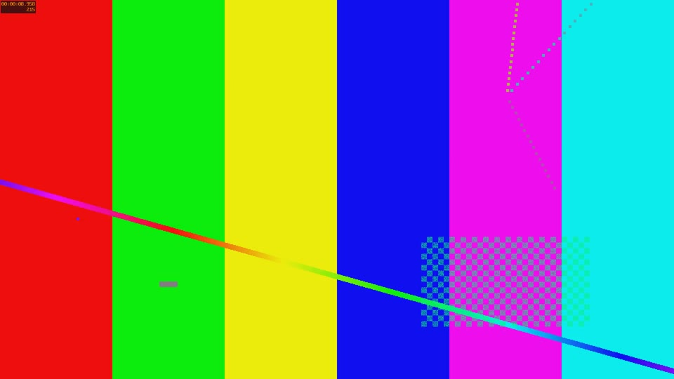
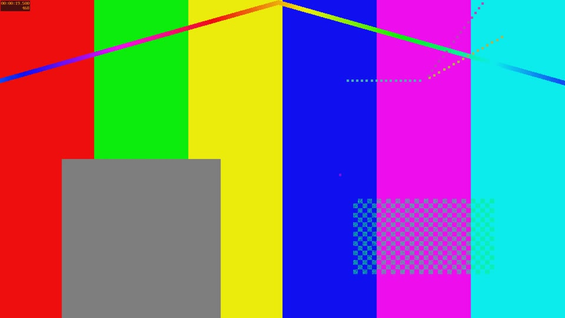

Netflix / IMF streaming delivery · 00:00:30 · defect_film.mov
Integrated loudness -15.8 LUFS is +11.2 dB off target. Apply a -11.2 dB static gain trim to the full mix.
Suggested fix: Apply a single static gain trim to the full mix to hit target. Do not re-compress — that changes the mix the director approved.
Illegal video levels on 76.9% of sampled frames (measured 0–236, legal 16–234).
Suggested fix: Apply a broadcast-safe limiter in the grade. Do not use a blunt clamp — soft-clip the highlights and lift crushed blacks.
| Timecode | Detail |
|---|---|
| 00:00:00:21 | luma 0 (legal 16–234) |
| 00:00:08:09 | luma 0 (legal 16–234) |
| 00:00:08:16 | luma 236 (legal 16–234) |
| 00:00:08:23 | luma 235 (legal 16–234) |




No embedded start timecode found.
Suggested fix: Rewrap with a start timecode track (01:00:00:00 for the first frame of picture is the usual convention).
2 event(s) below minimum duration, 0 above maximum, 1 sub-minimum or negative gap(s).
Suggested fix: Extend short events to the spec minimum and enforce the minimum inter-event gap. Most subtitle editors can batch-fix this.
| Timecode | Detail |
|---|---|
| 00:00:01:00 | 0.30s (min 0.83s): This one is far too short to read comfortably. |
| 00:00:04:12 | 0.50s (min 0.83s): This single line is deliberately much longer than the forty- |
| 00:00:01:07 | gap 0.020s to next event |
8-bit master; this target requires 10-bit or higher.
Suggested fix: Re-render from the online at 10-bit or higher. 8-bit masters band in gradients and will be rejected.
Audio format: 16-bit (need 24-bit).
Suggested fix: Deliver 24-bit / 48 kHz PCM. Never upsample a 16-bit mix and call it 24-bit — re-render from the session.
0 event(s) exceed 2 lines; 2 exceed 42 characters per line.
Suggested fix: Re-break the offending events. Break on grammatical clauses, not at the character limit.
| Timecode | Detail |
|---|---|
| 00:00:01:00 | 1 lines, longest 46 chars: This one is far too short to read comfortably. |
| 00:00:04:12 | 1 lines, longest 91 chars: This single line is deliberately much longer than the forty- |
2 of 4 events exceed 20 characters/second.
Suggested fix: Condense the text or extend the event. Reading speed above spec is the most common subtitle QC failure.
| Timecode | Detail |
|---|---|
| 00:00:04:12 | 182.0 cps: This single line is deliberately much longer than the forty- |
| 00:00:01:00 | 153.3 cps: This one is far too short to read comfortably. |
Colour primaries, transfer, matrix not tagged. Downstream systems will guess, and they often guess wrong.
Suggested fix: Rewrap with explicit colour tags (e.g. bt709 / bt709 / bt709). Untagged masters get misinterpreted downstream.
1 black segment(s) longer than the 4s limit inside the picture.
Suggested fix: Confirm these are intentional. Mid-content black longer than the spec limit reads as a dropout to automated QC.
| Timecode | Detail |
|---|---|
| 00:00:20:00 | 6.0s of black |

Runtime is 00:00:30 — short for a feature. Confirm this is the full picture and not a reel or excerpt.
Suggested fix: Confirm the runtime matches the delivery paperwork. A mismatch means a missing or duplicated reel.
Missing metadata field(s): title.
Suggested fix: Populate title, aspect ratio and creation metadata at rewrap.